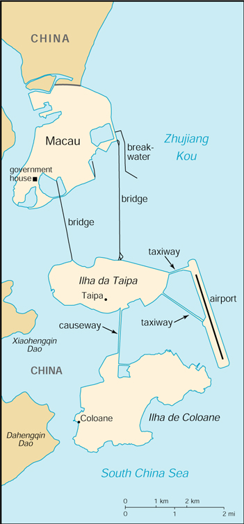

(special administrative region of China)
|
Macau (special administrative region of China) |
|
| Introduction Geography People Government Economy Communications Transportation Military Transnational Issues | ||
|  | ||
| Macau | Introduction | Top of Page |
| Background: | Colonized by the Portuguese in the 16th century, Macau was the first European settlement in the Far East. Pursuant to an agreement signed by China and Portugal on 13 April 1987, Macau became the Macau Special Administrative Region (SAR) of China on 20 December 1999. China has promised that, under its "one country, two systems" formula, China's socialist economic system will not be practiced in Macau and that Macau will enjoy a high degree of autonomy in all matters except foreign and defense affairs. |
| Macau | Geography | Top of Page |
| Location: | Eastern Asia, bordering the South China Sea and China |
| Geographic coordinates: | 22 10 N, 113 33 E |
| Map references: | Southeast Asia |
| Area: |
total:
21 sq km
land: 21 sq km water: 0 sq km |
| Area - comparative: | about 0.1 times the size of Washington, DC |
| Land boundaries: |
total:
0.34 km
border countries: China 0.34 km |
| Coastline: | 40 km |
| Maritime claims: | not specified |
| Climate: | subtropical; marine with cool winters, warm summers |
| Terrain: | generally flat |
| Elevation extremes: |
lowest point:
South China Sea 0 m
highest point: Coloane Alto 174 m |
| Natural resources: | NEGL |
| Land use: |
arable land:
0%
permanent crops: 2% permanent pastures: 0% forests and woodland: 0% other: 98% (1998 est.) |
| Irrigated land: | NA sq km |
| Natural hazards: | typhoons |
| Environment - current issues: | NA |
| Geography - note: | essentially urban; one causeway and two bridges connect the two islands of Coloane and Taipa to the peninsula on mainland |
| Macau | People | Top of Page |
| Population: | 453,733 (July 2001 est.) |
| Age structure: |
0-14 years:
22.68% (male 53,291; female 49,615)
15-64 years: 70.08% (male 150,538; female 167,431) 65 years and over: 7.24% (male 13,287; female 19,571) (2001 est.) |
| Population growth rate: | 1.79% (2001 est.) |
| Birth rate: | 12.36 births/1,000 population (2001 est.) |
| Death rate: | 3.71 deaths/1,000 population (2001 est.) |
| Net migration rate: | 9.25 migrant(s)/1,000 population (2001 est.) |
| Sex ratio: |
at birth:
1.05 male(s)/female
under 15 years: 1.07 male(s)/female 15-64 years: 0.9 male(s)/female 65 years and over: 0.68 male(s)/female total population: 0.92 male(s)/female (2001 est.) |
| Infant mortality rate: | 4.47 deaths/1,000 live births (2001 est.) |
| Life expectancy at birth: |
total population:
81.69 years
male: 78.88 years female: 84.64 years (2001 est.) |
| Total fertility rate: | 1.31 children born/woman (2001 est.) |
| HIV/AIDS - adult prevalence rate: | NA% |
| HIV/AIDS - people living with HIV/AIDS: | NA |
| HIV/AIDS - deaths: | NA |
| Nationality: |
noun:
Chinese
adjective: Chinese |
| Ethnic groups: | Chinese 95%, Macanese (mixed Portuguese and Asian ancestry), Portuguese, other |
| Religions: | Buddhist 50%, Roman Catholic 15%, none and other 35% (1997 est.) |
| Languages: | Portuguese, Chinese (Cantonese) |
| Literacy: |
definition:
age 15 and over can read and write
total population: 90% male: 93% female: 86% (1981 est.) |
| Macau | Government | Top of Page |
| Country name: |
conventional long form:
Macau Special Administrative Region
conventional short form: Macau local long form: Aomen Tebie Xingzhengqu (Chinese); Regiao Administrativa Especial de Macau (Portuguese) local short form: Aomen (Chinese); Macau (Portuguese) |
| Dependency status: | special administrative region of China |
| Government type: | NA |
| Administrative divisions: | none (special administrative region of China) |
| Independence: | none (special administrative region of China) |
| National holiday: | National Day (Anniversary of the Founding of the People's Republic of China), 1 October (1949); note - 20 December 1999 is celebrated as Macau Special Administrative Region Establishment Day |
| Constitution: | Basic Law, approved in March 1993 by China's National People's Congress, is Macau's "mini-constitution" |
| Legal system: | based on Portuguese civil law system |
| Suffrage: | direct election 18 years of age, universal for permanent residents living in Macau for the past seven years; indirect election limited to organizations registered as "corporate voters" (257 are currently registered) and a 300-member Election Committee drawn from broad regional groupings, municipal organizations, and central government bodies |
| Executive branch: |
chief of state:
President of China JIANG Zemin (since 27 March 1993)
head of government: Chief Executive Edmund HO Hau-wah (since 20 December 1999) cabinet: Executive Council consists of all five government secretaries, three legislators, and two businessmen elections: NA |
| Legislative branch: |
unicameral Legislative Council or LEGCO (23 seats; 8 elected by popular vote, 8 by indirect vote, and 7 appointed by the chief executive; members serve four-year terms)
elections: last held 22 September 1996 (next to be held by 15 October 2001) election results: percent of vote by party - NA%; seats by party - APPEM 2, UNIPRO 2, CODEM 1, UDM 1, UPD 1, ANMD 1 |
| Judicial branch: | The Court of Final Appeal in the Macau Special Administrative Region |
| Political parties and leaders: |
the following is a listing of those associations that participated in the last legislative elections: Associacao de Novo Macau Democratico or ANMD [leader NA]; Associacao Promotora para a Economia de Macau or APPEM [leader NA]; Convergencia para o Desenvolvimento or CODEM [leader NA]; Uniao Geral para o Desenvolvimento de Macau or UDM [leader NA]; Uniao para o Desenvolvimento or UPD [leader NA]; Uniao Promotora para o Progresso or UNIPRO [leader NA]
note: there are no formal political parties, but civic associations are used instead |
| Political pressure groups and leaders: | Catholic Church [Domingos LAM, bishop]; Macau Society of Tourism and Entertainment or STDM [Stanley HO, managing director]; Union for Democracy Development [Antonio NG Kuok-cheong, leader] |
| International organization participation: | CCC, ESCAP (associate), IMO (associate), Interpol (subbureau), UNESCO (associate), WMO, WToO (associate), WTrO |
| Diplomatic representation in the US: | none (special administrative region of China) |
| Diplomatic representation from the US: | the US has no offices in Macau, and US interests are monitored by the US Consulate General in Hong Kong |
| Flag description: | light green with a lotus flower above a stylized bridge and water in white, beneath an arc of five gold, five-pointed stars: one large in center of arc and four smaller |
| Macau | Economy | Top of Page |
| Economy - overview: | The economy is based largely on tourism (including gambling) and textile and fireworks manufacturing. Efforts to diversify have spawned other small industries - toys, artificial flowers, and electronics. The tourist sector has accounted for roughly 25% of GDP, and the clothing industry has provided about three-fourths of export earnings; the gambling industry probably represents over 40% of GDP. More than 8 million tourists visited Macau in 2000. Macau depends on China for most of its food, fresh water, and energy imports. Japan and Hong Kong are the main suppliers of raw materials and capital goods. Output dropped 5% in 1998 and 3% in 1999, with a small 2% gain in 2000. Macau reverted to Chinese administration on 20 December 1999. Gang violence, a dark spot in the economy, probably will be reduced in 2000-01 to the advantage of the tourism sector. |
| GDP: | purchasing power parity - $7.82 billion (2000 est.) |
| GDP - real growth rate: | 2% (2000 est.) |
| GDP - per capita: | purchasing power parity - $17,500 (2000 est.) |
| GDP - composition by sector: |
agriculture:
1%
industry: 25% services: 74% (2000 est.) |
| Population below poverty line: | NA% |
| Household income or consumption by percentage share: |
lowest 10%:
NA%
highest 10%: NA% |
| Inflation rate (consumer prices): | -1.8% (2000 est.) |
| Labor force: | 283,450 (1999) |
| Labor force - by occupation: | restaurants and hotels 26%, manufacturing 22%, other services 52% (2000 est.) |
| Unemployment rate: | 6.6% (2000) |
| Budget: |
revenues:
$1.26 billion
expenditures: $1.22 billion, including capital expenditures of $175 million (1999 est.) |
| Industries: | clothing, textiles, toys, electronics, footwear, tourism, gambling |
| Industrial production growth rate: | NA% |
| Electricity - production: | 1.355 billion kWh (1999) |
| Electricity - production by source: |
fossil fuel:
100%
hydro: 0% nuclear: 0% other: 0% (1999) |
| Electricity - consumption: | 1.422 billion kWh (1999) |
| Electricity - exports: | 3 million kWh (1999) |
| Electricity - imports: | 165 million kWh (1999) |
| Agriculture - products: | rice, vegetables |
| Exports: | $2.6 billion (f.o.b., 2000 est.) |
| Exports - commodities: | textiles, clothing, toys, electronics, cement, footwear, machinery |
| Exports - partners: | US 47%, EU 30%, China 9.2%, Hong Kong 6.7% (1999) |
| Imports: | $2.4 billion (c.i.f., 2000 est.) |
| Imports - commodities: | raw materials, foodstuffs, capital goods, fuels, consumer goods |
| Imports - partners: | China 36%, Hong Kong 18%, EU 13%, Taiwan 10%, Japan 7% (1999) |
| Debt - external: | $1.7 billion (1997) |
| Economic aid - recipient: | $NA |
| Currency: | pataca (MOP) |
| Currency code: | MOP |
| Exchange rates: | patacas per US dollar - 8.033 (January 2001), 8.025 (2000), 7.990 (1999), 7.978 (1998), 7.974 (1997), 7.966 (1996); note - linked to the Hong Kong dollar at the rate of 1.03 patacas per Hong Kong dollar |
| Fiscal year: | calendar year |
| Macau | Communications | Top of Page |
| Telephones - main lines in use: | 176,837 (2000) |
| Telephones - mobile cellular: | 120,957 (2000) |
| Telephone system: |
general assessment:
fairly modern communication facilities maintained for domestic and international services
domestic: NA international: HF radiotelephone communication facility; access to international communications carriers provided via Hong Kong and China; satellite earth station - 1 Intelsat (Indian Ocean) |
| Radio broadcast stations: | AM 0, FM 2, shortwave 0 (1998) |
| Radios: | 160,000 (1997) |
| Television broadcast stations: | 0 (receives Hong Kong broadcasts) (1997) |
| Televisions: | 49,000 (1997) |
| Internet country code: | .mo |
| Internet Service Providers (ISPs): | 1 (2000) |
| Internet users: | 40,000 (2000) |
| Macau | Transportation | Top of Page |
| Railways: | 0 km |
| Highways: |
total:
50 km
paved: 50 km unpaved: 0 km (2001) |
| Waterways: | none |
| Ports and harbors: | Macau |
| Merchant marine: | none (2000 est.) |
| Airports: | 1 (2000 est.) |
| Airports - with paved runways: |
total:
1
over 3,047 m: 1 (2000 est.) |
| Macau | Military | Top of Page |
| Military branches: | Macau garrison of China's People's Liberation Army (PLA) includes about 500 troops |
| Military manpower - availability: | males age 15-49: 125,737 (2001 est.) |
| Military manpower - fit for military service: | males age 15-49: 69,191 (2001 est.) |
| Military - note: | responsibility for defense reverted to China on 20 December 1999 |
| Macau | Transnational Issues | Top of Page |
| Disputes - international: | none |
{kind=link}
{kind=link}